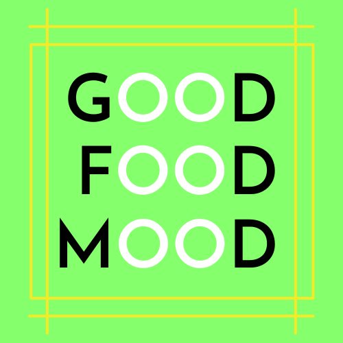

My projects...
adventure trail hikes
"Adventure Trails Hikes is a new business offering extreme hiking in a number of different countries. It offers supervised hikes, ranging from short day tours to weeklong treks, with camping. The service is aimed at college-educated professionals (men and women) between the ages of 18 to 35. The focus is not just on the experience of nature but also the specific nation's culture and traditions. Hike experiences will typically include traditional meals, music/theatre, as well as contact with the local population. Additionally, the emphasis is on sustainable, environmentally behaviour and respect for the local culture."
In this project I was tasked of creating a website tailored towards young adults and show them different types of hikes. The whole project would consist of planning out the process using a Trello board, designing a logo and website. As well as follow the WCAG guidelines and design that capture the users focus and get them to engage with the website.
hero page

I wanted to capture the young user with an image of spectacular nature and a trail that entices the desire to go on a trail with this company. By using an image like this where there are people on a trail, make the user think about how it would feel to be that person. Also the title encourages the user to do something to fulfill their desire to go on a hike.
design

I went with a minimalistic design utilizing the whitespace in order for the user to easily direct their attention to the parts the client want them to focus on. Too much items like text or images will only clutter the page and confuse the user, this might make the user give up and find another website because they couldn't work out how to find the trails they wanted. The color also is simply just green and white/black. The focus of the client is that they focus on environmentally friendly trails, therefore I chose green as the main color as this symbolizes earth, growth and good health. The white and black makes it easier to see the text and images on the website.
trail page

The trail page I wanted to keep clean and easy for the user to navigate through the trails. Therefore I went with a design using the cards from the main page, so they can quickly scan each trail and find the one that speaks most to them. The idea is that if the user wants to learn more about the specific trail they can press the card and be directed to a more detailed page for this single trail.
card design

I had searched for similar types of websites to get inspiration to how they designed their treks. I went with the design above, making sure that the most important info on the selected trek was in this card. If the website would be worked on more, the card would direct the user to a single page with alot more info on the trail. But in order for the user to quickly decide subconsciously if this is a trail for them or not, then the most important info is shown so the user can decide without effort and find the trail for them.
gamehub
"GameHub is an online shop where users can purchase computer games. This gaming marketplace lets you buy tons of video games online for any device. GameHub is a competitively priced website with a huge range of games."
I was tasked to first design a styletile for the client, presenting them with design elements I intend to use later on when building the website. This part was to show what we had learned about visual hierarchy. Later I was tasked with building the actual website within WCAG guidelines, reaching the target audience and the clients intended use for the website. The last part was setting up a headless wordpress API and then fetch that data using Javascript and show the info of the game the user clicked on, on a seperate page.
design - styletile

The first part of the project was to design a styletile, which would function as a basis for the projects design. This paret of the project was to teach us about planning a design and working from this before building the actual website. This styletile is what would be shown to clients so they get a feel of how the design might be regarding the colors, images and fonts.
html & css - building the website

In this course we were tasked of building the website chosen in the "Design 1" course. In Design 1 we got a brief consisting of the clients info on target audience, site architecture, slogans etc. In my brief the target audience was aged 18 to 25 and the website's function is to buy and sell both used and new games at a competative price. Wen building and designing each page I had these parts and WCAG guidelines in mind as well. It is important to design the website to reach the target audience in order for the company to reach their desired goal of the website.
headless api


The final part of this cross course project entails using an API-call to a database and use it to manipulate the DOM to show the games on one page. Using Wordpress API I created a database with images and info on each game. Then in Javascript I made a call to that database with Rest API, then set up a funtion so when a user clicks on one game it will take them to a single page with info on that specific game.
good food mood 
I was tasked with creating a website called Good Food Mood which helps people to find recipes. The site is aimed at working people who are interested in eating healthy and interesting food, but don't have a lot of time to read recipe books. The site should feel fun and engaging for users and guide them to take action.
fun & engaging design

The site needed to be fun and engaging for the users to stay on the website and use it. By using a minimalistic design and using the colors green and yellow, ensured that the website was easy to navigate without effort and the colors subconsciously instill a feeling of joy and healthy
Search through an API

Using an API-call in javascript, allows users to input ingredients in the search input and then they get back a list of recipes.
contactform in javascript

In javascript I was tasked to create a functioning contactform. In order to seperate the form from the rest of the page, I used a blue color that is in contrast to the other two.